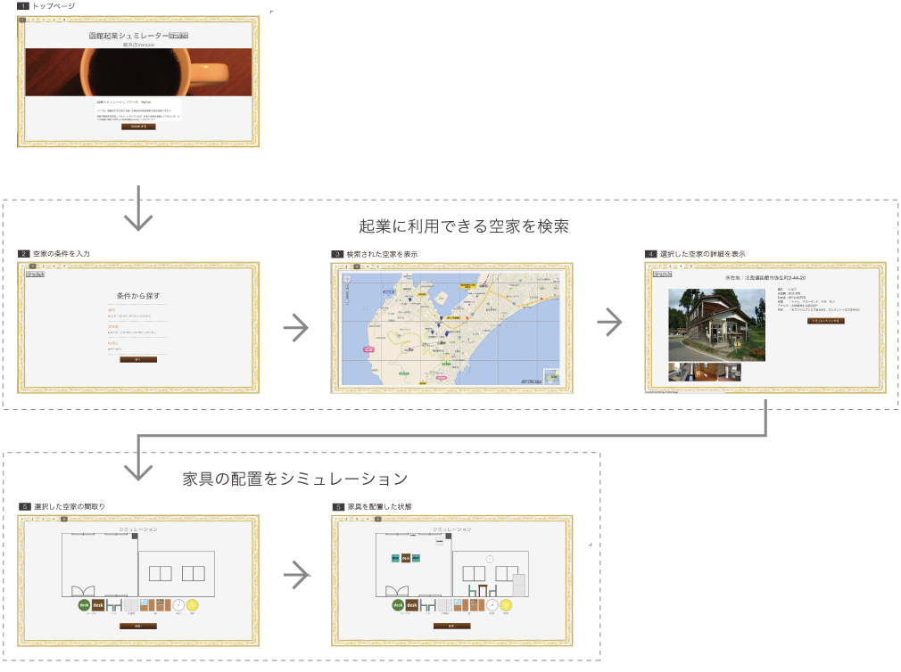

起業シミュレーション Switch
「起業の準備を疑似体験する」WEBアプリケーションを提案しました。
- 期間
- 2014年9月 (1ヶ月)
- プログラミングコンテスト Carrer Hub の期間内に制作
- チーム構成
- 未来大院メディアデザイン領域の学生3名
函館市の抱える問題
空家の増加による老朽化問題
函館市内の空家が増加し、空家の老朽化が問題となっている。特に「元町」などの観光地区では管理者不在の空家が増加している。
都市圏へ転出する若年層の増加
若年層における函館市外への転出件数が増加しています。私達は、函館市内の大学における就職地域の記録から、大学卒業後に都市圏で就職する者が多いことが影響しているのではないかと考えました。
提案
自分のお店を持ちたいと考えている人をターゲットに、出店する建物の選択、家具の配置と起業の流れをシミュレーションするWEBアプリケーションを提案しました。
プロセス
インタビュー調査
函館市は多くの課題を抱えていますが、その中で特に困っている問題は何かを明らかにするため、役所職員にインタビューを行いました。
次の問題に着目しました。
- 若年層の転出増加
- 空家の増加
アイデア検討
調査で明らかになった2つの問題点からブレインストーミングを行いました。
次のアイデアを元に提案しました。
- 起業を支援して若年層の転出を減らす
- 空家を喫茶店として活用する
プロトタイプ作成
画面遷移図を作成後、(1)UIデザイン (2)API (3)アニメーションに分担して実装を進めました。私はアニメーション作成を担当しました。
発表
プログラミングコンテスト「Carrer Hub」で制作したプロトタイプを用いたプレゼンテーションを行いました。
また函館市役所の職員にお時間を頂き、成果 報告を行いました。そこで実用可能性や展望についてディスカッションを行いました。
工夫と成果
1ヶ月という短い期間だったので、重要な機能のみをプロトタイプで作成しました。コーディングが得意ではないメンバーだったのですが、HTML5のCanvas機能など、技術を習得しながら開発に挑戦しました。
アプリコンテスト Mashup Awards10 にてゼンリンデータコム賞を頂きました。
課題解決型プログラミングコンテスト Carrer Hub にて Speed Link Japan 企業賞を頂きました。